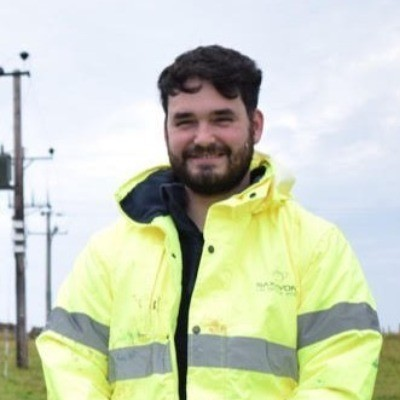
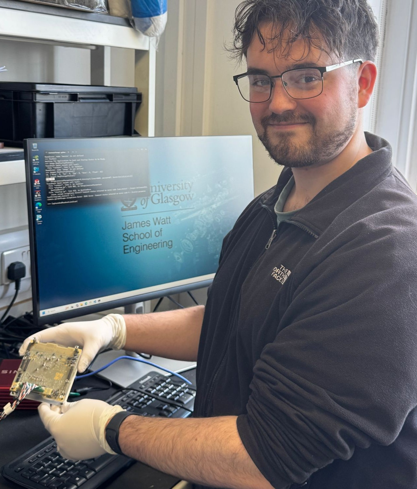
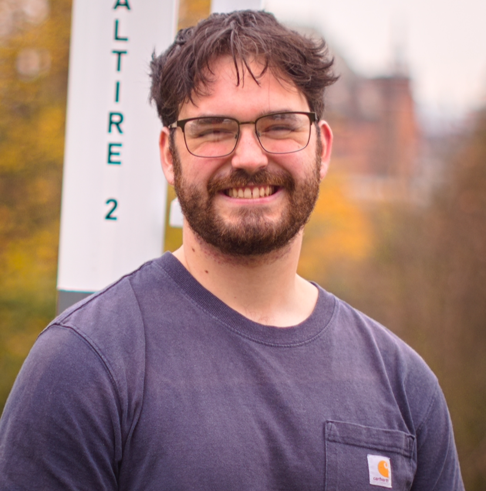
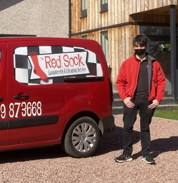
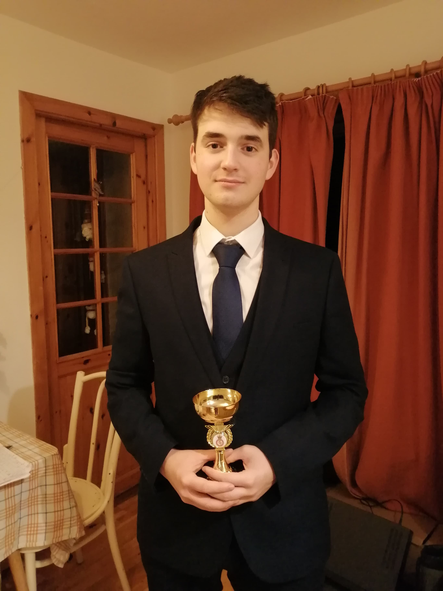

Experience
Past Work
First and Second Internships at SaxaVord UK Spaceport
I completed two internships at SaxaVord UK Spaceport, the UK’s first operational vertical launch site. During my first placement (Sept–Nov 2024), I took part in key operational tasks, including maintaining Safety Exclusion Zones for rocket engine tests,
and collaborating with the team to keep daily operations running smoothly.
I returned for a second internship (June–July 2025) to build on that experience, further developing my technical and operational skills in a fast-paced aerospace environment. Both placements were an incredible opportunity to get hands-on experience
in spaceport operations and contribute directly to the development of the site.
Alan Marshall Mathematics Tutor
As a Mathematics Tutor with Alan Marshall Mathematics Tutors, I work with students across National 5, Higher, and Advanced Higher levels, helping them build confidence and a solid understanding of key concepts. I also help with the running of the Higher Applications of Mathematics course. It’s really rewarding to see students grasp new ideas and enjoy learning maths.
Hydrogen Fuel Racing COO
 As Chief Operating Officer of the University of Glasgow Hydrogen Fuel Racing Society, I helped grow the team and make sure everything ran smoothly. I took part in recruitment,
giving talks to students and welcoming new members, as we developed a hydrogen-powered race vehicle for the Eco-Shell Marathon.
As Chief Operating Officer of the University of Glasgow Hydrogen Fuel Racing Society, I helped grow the team and make sure everything ran smoothly. I took part in recruitment,
giving talks to students and welcoming new members, as we developed a hydrogen-powered race vehicle for the Eco-Shell Marathon.
I also worked on the society’s branding and outreach, helping connect with sponsors and build the team’s presence. It was a really rewarding experience seeing the society come together and grow.
Glasgow University OirthirSAT Software Engineer
During my time at University I was a Software Engineer on the OirthirSAT project, a nanosatellite project that won a national competition run by the UK Space Agency. I worked on software development for Earth observation and data analysis.
I helped to create a UNET-based machine learning algorithm to map images of the UK coastline for measuring sea level changes related to climate change.
I also helped to convert Marching Squares, FMask, and UNET algorithms into C++, preparing them for integration with the satellite’s onboard systems. '
Alongside this, I contributed to the Critical Design Review (CDR) with UKSpace, alongside this I built a fully functional project website in HTML, JS and CSS. Being part of this award-winning project was an incredible experience that combined software engineering, innovation, and climate research.
Glasgow University Avionics Member and Business and Operations Member
As part of GU Rocketry, I worked within both the Avionics and Business & Operations teams, contributing to a range of technical and creative projects.
On the avionics side, I helped develop SOLARA, an environmental avionics board designed to collect barometric, humidity, and temperature data during flight.
I helped with component selection and schematic design in KiCAD, ensuring reliable
performance in high-altitude conditions. Being part of this project was a great experience.
NHS Healthcare Support Worker
In my second year of university, I worked as a Healthcare Support Worker with the NHS. It was a really meaningful job that gave me a genuine understanding of what it means to care for people. I supported vulnerable patients across the Glasgow and Clyde area, often during 12-hour shifts, and always tried to make their day a little easier. It was challenging at times, but incredibly rewarding.
The Red Sock Laundrette and Cleaning Services Cleaner
My first job was as a Cleaner at
As I gained more experience,
I also took on responsibility for managing invoices which gave me insight into the business and software side of operations.
I really enjoyed working closely with both clients and colleagues to make sure every job was done to a high standard and everyone left satisfied.
Army Cadet
From 2013 to 2019, I was part of the Army Cadet Force, where I worked my way up to Cadet Sergeant.
Over the years, I took part in training weekends, summer camps, and events — experiences that were both challenging and a lot of fun.
Being a cadet gave me the chance to learn hands-on skills like fieldcraft, navigation, and first aid, while also developing leadership and teamwork abilities.
As a Cadet Sergeant, I enjoyed helping to guide younger cadets and seeing them grow in confidence. It was a big part of my teenage years and taught me lessons about responsibility, communication,
and perseverance that I still carry with me today.